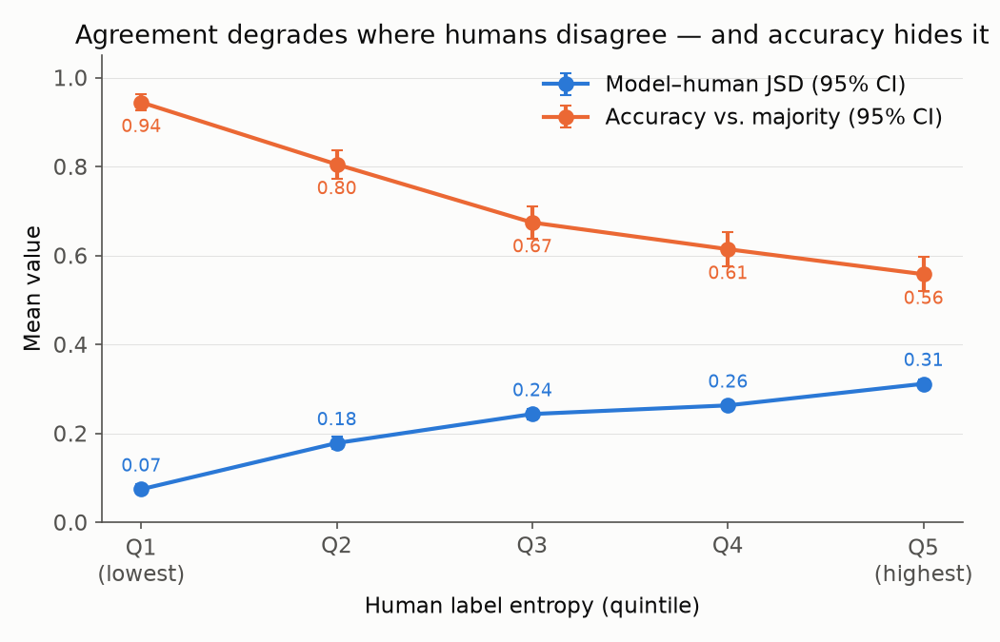
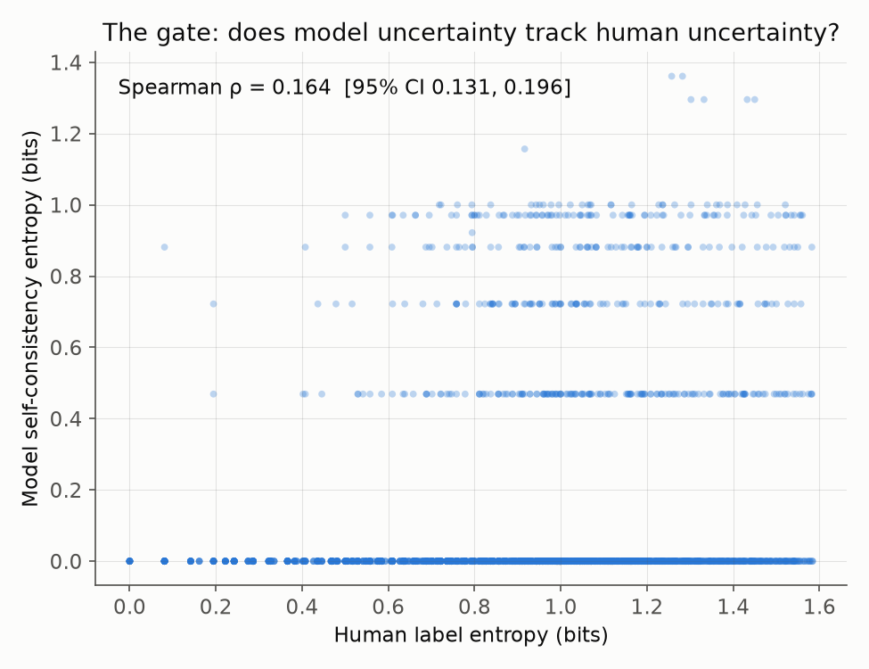
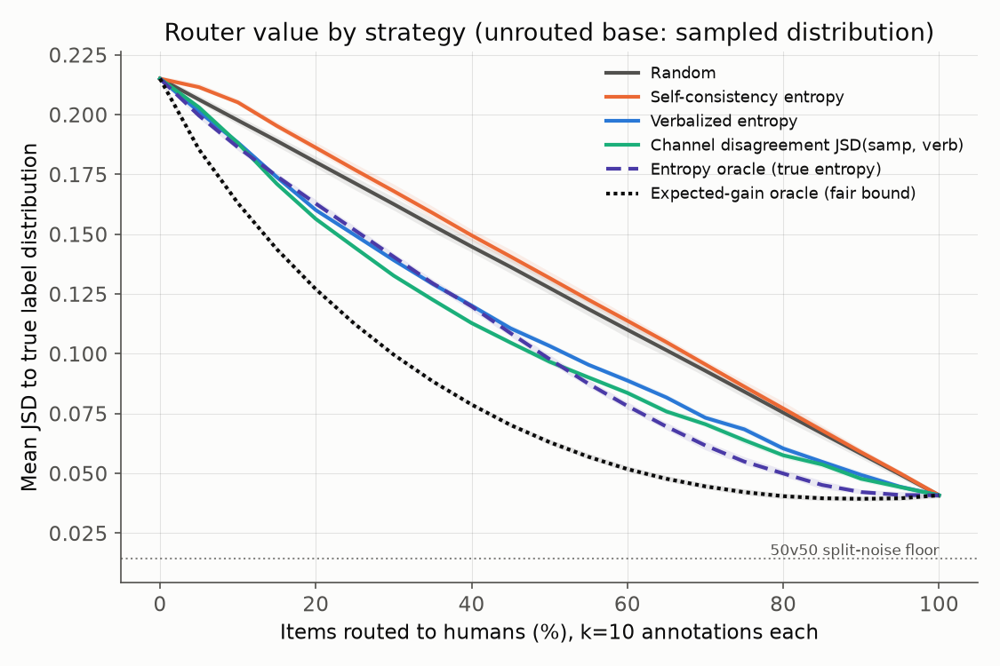
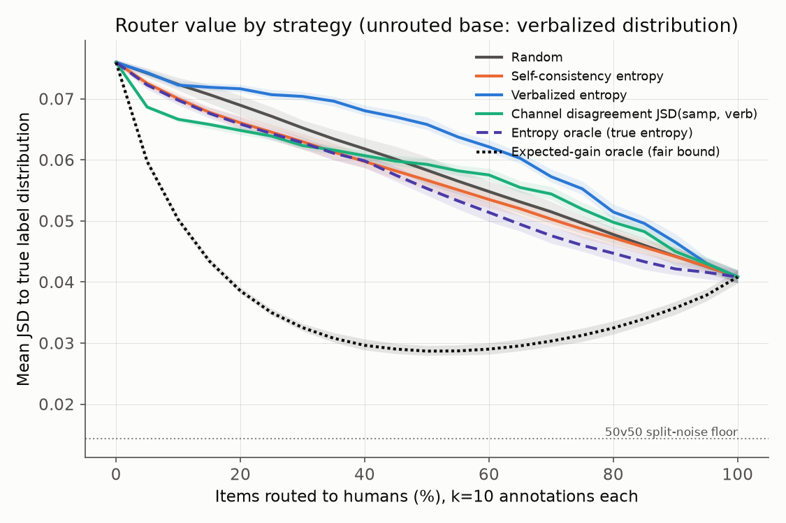

LLM annotators under human disagreement, and the economics of routing
TL;DR. When you ask an LLM the same contested question 10 times, it gives the identical answer 85–94% of the time — even where 100 humans split 50/50. So "route items the model is unsure about to humans" has no signal to route on. But if you ask the model to estimate how 100 annotators would split, its estimate is 3× closer to the real human distribution and does carry routing signal — worth ~1.5× your annotation budget against a weak baseline. The catch: against the model's own best output, routing by its uncertainty is worse than random, because the model's errors hide in items it is confidently wrong about. Model uncertainty tells you where the task is hard — never where the model is wrong.
Claims that LLMs can replace human annotators rest on aggregate agreement numbers. On ChaosNLI — 3,113 NLI items with 100 human annotations each, so the full disagreement distribution is known — the standard metric turns out to be most flattering exactly where the model is furthest from human judgment: accuracy against the majority label drops only gently (0.94 → 0.56) while distributional divergence quadruples (JSD 0.07 → 0.31).

The obvious triage architecture — let the model flag what it's unsure about — fails at step one: the model is deterministic across 10 samples on 85% of items (Krippendorff's α = 0.90 vs. 0.37 for the human pool), and its sampling entropy barely correlates with human disagreement (ρ = 0.164). Enabling reasoning doesn't change this.

But prompted to estimate the annotator distribution ("imagine 100 careful annotators — how many pick each label?"), the same model produces distributions 3× closer to the human ones (JSD 0.07), nearly flat across difficulty, whose entropy does track human disagreement (ρ = 0.393). The model knows people disagree; it just never acts uncertain.
A budget-sweep simulation sends the top-scoring items to k human annotators (drawn from each item's real annotation pool) and keeps the model's distribution for the rest, with regret oracles as the fair upper bound.


Bonus economics: in distributional terms, one verbalized model call ≈ five human annotations; a single human label is worse than the model's estimate.
| ChaosNLI | DICES (safety) | Par (post-cutoff labels) | |
|---|---|---|---|
| Determinism (sampled) | 0.85 | 0.94 | 0.90 |
| JSD sampled | 0.224 | 0.225 | 0.224 |
| JSD verbalized | 0.072 | 0.090 | 0.154 |
| Gate ρ (verbalized) | 0.393 | 0.289 | 0.039† |
| Split-half noise ceiling | 0.843 | 0.750 | −0.002 |
† Unmeasurable, not failed: a 4-annotator panel's split-half entropy correlation is zero, so no signal could register — routing gates are only measurable against deep annotator panels. Determinism, the channel gap, and the anti-selection reversal all replicate on conversational safety (DICES-350, 104 raters/item); the verbalized advantage holds on LeWiDi-2025 labels released after the model's training.
Use verbalized distributions as the machine annotation. Route by the model's stated uncertainty only to decide which items get humans at all. And never expect the model to tell you where it is wrong — error-finding needs an independent signal. Headline agreement numbers should be reported stratified by inter-annotator agreement, always.
@misc{mehrotra2026disagreebench,
title = {Model-Reported Uncertainty Finds Hard Items, Not Model Errors:
LLM Annotators Under Human Disagreement and the Economics of Routing},
author = {Mehrotra, Yogya},
year = {2026},
url = {https://yogyam.github.io/DisagreeBench/}
}
Model: claude-sonnet-5 · ~44k API requests, ≈$33 total · full pipeline, results, and figures in the repo. Concurrent work: Lail (2026) independently finds the null half of the anti-selection result on the same data (posted Sept 6; these results were public from Aug 19). Related: Ni et al. (EACL 2026) on verbalized vs. sampled disagreement prediction.